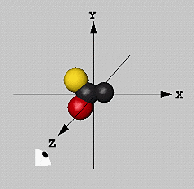

Molecule coordinate commands

There is one single fixed coordinate system in MolScript: The viewer
looks down from the positive z axis towards the origin. The x-y plane
is perpendicular to the view direction. The coordinate system is
right-handed; x increases from left to right, and y increases from the
bottom upwards. The distance unit is Ångström.
The viewpoint cannot be changed (however, see the
viewpoint command). To view the
molecule from another angle, the atomic coordinates have to be
transformed (i.e. rotated and/or translated)
within the coordinate system.
The copy and delete commands
allow manipulation of the coordinates read into MolScript in powerful
ways. For instance, one may have available the transformation matrices
that define a symmetrical oligomer of a protein structure. In MolScript,
it is easy to create the constituent subunits from the original
coordinates using the copy and
transform commands.
The molecule coordinates are read using the read
command, and are then stored internally. The various atom and
residue selection expressions operate on
the molecule data and yield selections for the
graphics commands to render.
Currently, MolScript reads only
PDB format coordinate files.
Name and type strings
When the coordinate data has been read, some processing is done on the
strings in it: the strings for the residue names (=numbers), residue
types, and atom names are left-shifted, and blanks are squeezed out,
to facilitate name comparisons
involving these items. As a special case, any '*' (star) characters in
atom names are changed to ''' (single-quote) to avoid a clash with the
X-PLOR type wildcard character
used in MolScript. This is relevant for nucleic acids in PDB format;
there, primes are represented by '*' characters.
Atomic radii and colours
Default atomic radii and colours (see parameters
atomcolour and
atomradius) as well as
residue colours (parameter
residuecolour) are
automatically set by MolScript after the coordinate file has been read.
Segment identifiers
The current version of MolScript handles the segment identifier
(segid) in the new (v2.0) PDB format. The segid was introduced as the
chain identifier in X-PLOR
(Brünger 1992).
If present, it can be accessed in the residue selection
segid.
Atomic elements
The current version of MolScript interprets the atomic element as
given in the new (v2.0) PDB format. If the PDB file is of the older
format, then a reasonable guess as to the element type based on the
atom name is made. This value is accessible as the atom selection
element.
MODEL
PDB coordinate files in the new format (v2.0 and higher) may contain a
keyword MODEL indicating that the file has several coordinate sets for
the same molecule. This is for NMR protein structures, which are most
often determined as sets of 3D structures. The models are stored
in MolScript as separate molecules, having the same molecule name, but
different model numbers, which can be used in the residue selection
model. Molecules read from files
containing no MODEL records (e.g. an X-ray diffraction
structure) will have the model number 0.
The read command has three forms, all of which need two
arguments. The first argument is the molecule name to assign to the
coordinate data. It may be any valid identifier. The molecule name can
be used in the residue selection
molecule.
PDB code
The first form of the read command is used if the second argument is a
valid PDB data set code, having four characters where the first
character is a digit. The full PDB file name is constructed from
the environment variable MOL3D_PDB_DIR, which must be defined. Three
different directory and file name conventions are tested
consecutively, and the first that works is used:
- PDB standard hierarchical organisation and file name:
for code 1XYZ the file is $MOL3D_PDB_DIR/distr/xy/pdb1xyz.ent
- PDB flat directory, standard file name:
for code 1XYZ the file is $MOL3D_PDB_DIR/pdb1xyz.ent
- PDB flat directory, simplified file name:
for code 1XYZ the file is $MOL3D_PDB_DIR/1xyz.pdb
The given PDB code is changed to lower case characters, and the other
strings used to construct the file name are all in lower case, except
the environment variable value which is used as is.
file name
The second form of the read command is used when the second argument
is not a valid PDB data set code. The second argument (optionally
enclosed by double-quotes '"') is then interpreted as a complete
coordinate file name. In the current version of MolScript, only PDB
files are supported.
inline PDB
The keyword inline-PDB (no double-quotes!) as the
second argument in the command instructs MolScript to read the
subsequent lines of the input file (after the semi-colon ';') as a PDB
file, until a PDB record with the keyword END appears.
This inline PDB part of the input file is unusual in that it is not
free-format, but must follow the PDB format rules exactly. The usual
MolScript interpretation of the input file is resumed after the line
containing the PDB END record. If there is no END record in the PDB
data, then an error will (most likely) occur as MolScript tries to
interpret the rest of the MolScript input file as a PDB format file.
This feature allows the creation of entirely self-contained MolScript
input files, which contain both coordinate data as well as
transformation and graphics commands. It is intended mainly as a format
that other programs (such as molecule display or analysis programs)
could generate.
The coordinates of the selected atoms are transformed by a matrix.
The matrix is defined by a set of one or more operations, each
preceded by the by keyword. The operations are
conceptually applied to the atom coordinates in the specified order,
one operation after the other.
Any number of operations may be specified. This means that it is not
necessary for the user to modify any previous operations if a
modification of the transformation is needed; one can just add the
operations needed to achieve the desired transformation. The available
operations are listed below.
Each operation generates a 4x4 transformation matrix. These matrices
are sequentially concatenated into one single matrix before the
transformation is actually applied.
Note that it is valid to transform a selection
containing no atoms. This may be useful when a current transformation
matrix needs to be established for the
object command, without changing
the coordinates of any atoms.
Transform the atom coordinates so that the point specified by the
given vector is moved to the origin.
This is most often used with the
position command, which produces the
geometrical centre-of-gravity of its atom
selection. Note that this will refer to the atom
coordinates as they are before the operations of
this particular transform command have been applied. Therefore, this
particular operation should be used as the first one in a transform
command.
Translate the atom coordinates by the specified vector.
Rotate the atom coordinates around the specified x-, y- or z-axis of
the fixed coordinate system. The value is given as an angle in units
of degrees, where a positive value rotates counter-clockwise around
the given axis when viewed from the positive axis down towards the
origin of the fixed coordinate system.
Rotate the atom coordinates around the axis specified by the given
vector. The value is given as an angle in units of degrees, where a
positive value rotates counter-clockwise around the given axis
when viewed from the positive axis down towards the origin of the
fixed coordinate system.
Rotate the atom coordinates by the explicit specified 3x3 rotation
matrix. The validity of this matrix is not checked by MolScript. If it
is incorrect, the coordinates will be corrupted.
This feature is used most often together with the
interactive OpenGL mode, which
allows interactive rotation of the graphics objects, and can output
the value of the rotation matrix needed to achieve the current
view. This matrix can then simply be cut-and-pasted into the
appropriate transform command in the input file.
Use the matrix stored by the most recent
store-matrix command. If no such command
has been given, then this operation has no effect.
Store the transformation matrix defined by the most recent
transform command. The stored matrix can then
be used in a subsequent transform command by
the recall-matrix operation. Only one
matrix can be stored.
The stored matrix is not affected when the current
plot is finished. This means that for
the output formats in which more than one plot can be specified in one
single input file (currently only
PostScript), it is possible to
defined a transformation in one plot and carry it over into another plot.
This feature is used for example in cases where the exactly same view
is needed for different coordinate data sets. One such application is
the display of multiple structures determined from NMR data, where the
proper least-square fit has already been determined using some
analysis software, and it is essential that the relative orientations
of the coordinates are not disturbed by MolScript.
The copy command operates on an atom selection. A new molecule with
the given name is created, and all atoms selected, and all residues
which these atoms are part of, are copied to the new molecule. The new
molecule is a completely self-contained entity which in no way is
dependent on the atoms it was copied from. Since an atom selection is
used as the argument in the command, it is possible to create a new
molecule containing any subset of atoms and residues from another.
Delete the entire molecule defined by the given molecule name. The
molecule name is freed for use in a subsequent
read or copy command.
Top page